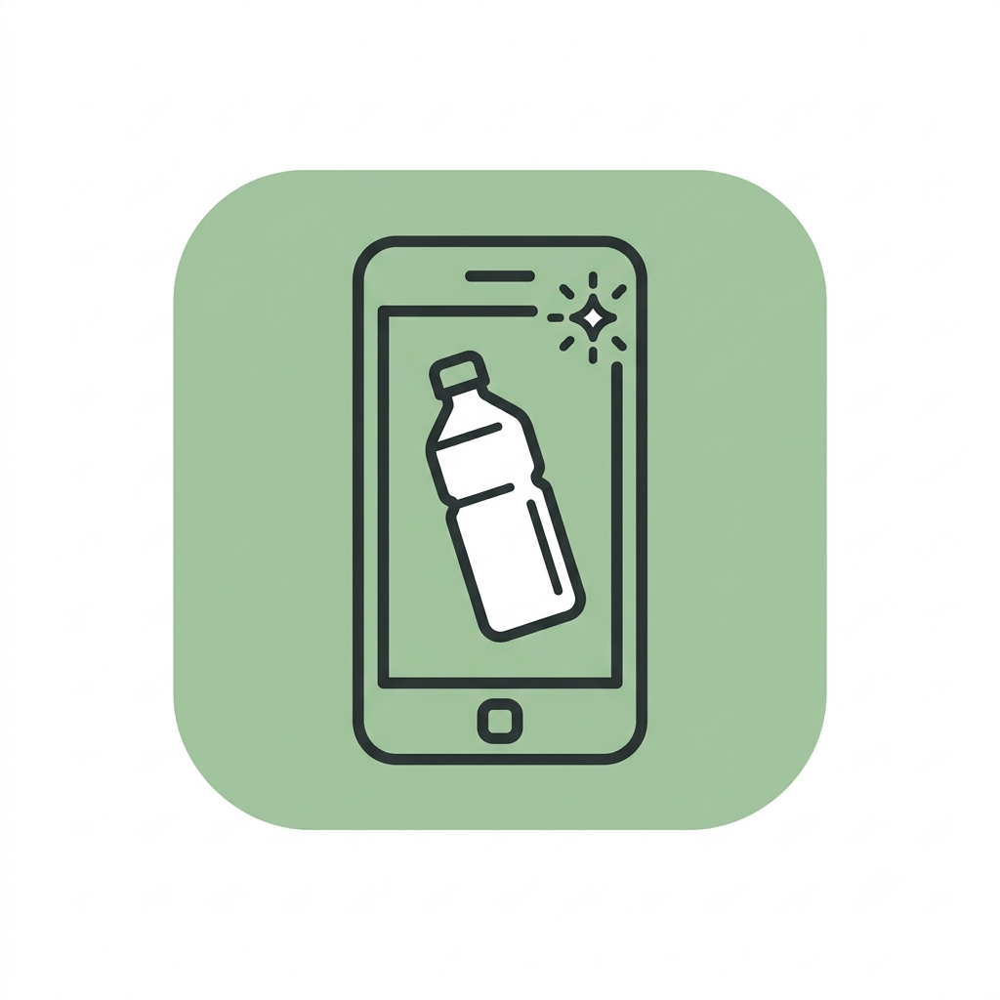
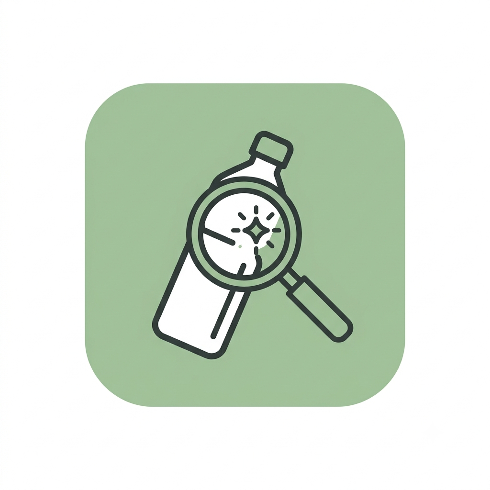
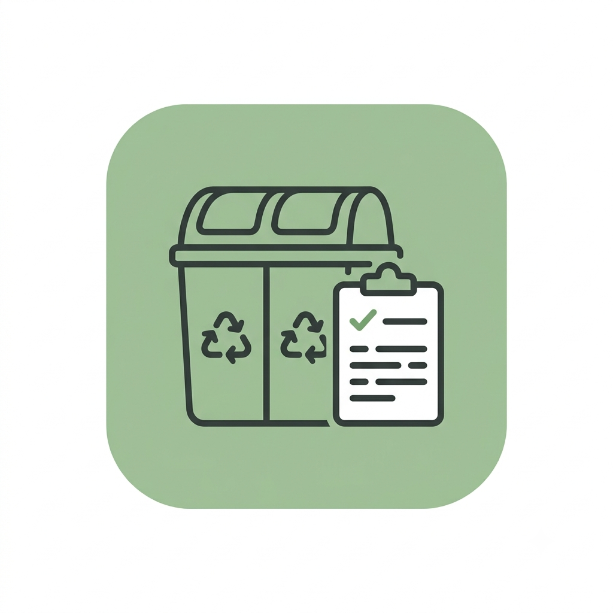
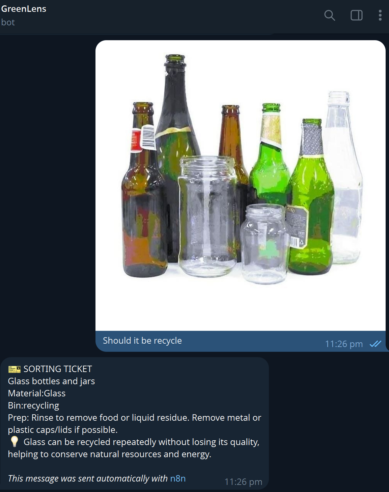

Send a photo
Send a photo of the item to the GreenLens Telegram bot.
AI-powered recycling assistant
GreenLens identifies items from a photo and tells you exactly how to dispose of them per NEA guidelines.
How it works
GreenLens keeps the process fast and low-effort while grounding every answer in official NEA guidance.

Send a photo of the item to the GreenLens Telegram bot.

AI identifies the material and checks it against official NEA guidelines.

Receive the right bin and prep steps so you can dispose of it correctly.
Demo
Here’s a placeholder space for your embedded screenshot or GIF showing the bot response format.

GreenLens identifying a plastic bottle and returning NEA disposal instructions.
Why it matters
Even small recycling mistakes can undo good intent, especially when contamination sends whole batches to waste instead of recovery.
11%
Only 11% of household waste in Singapore is recycled
40%
An estimated 40% of what's placed in recycling bins is contaminated and thrown out anyway
70%
Singapore is targeting a 70% recycling rate by 2030
Source: NEA, nea.gov.sg
Call to action
Message GreenLens on Telegram for quick, clear disposal guidance when you are unsure what bin to use.